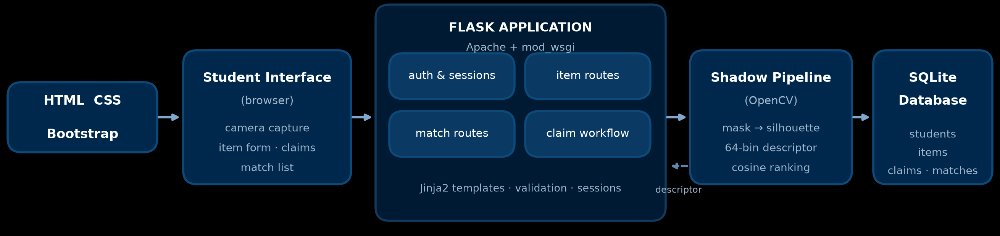
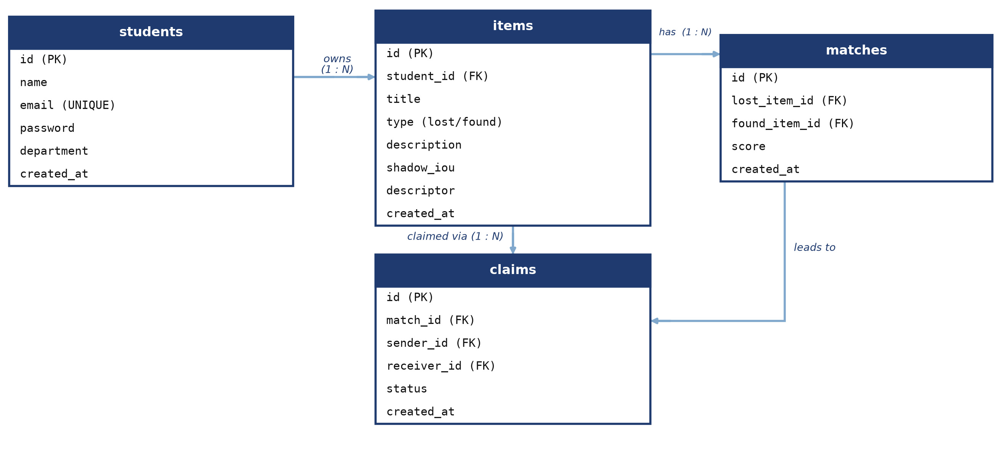
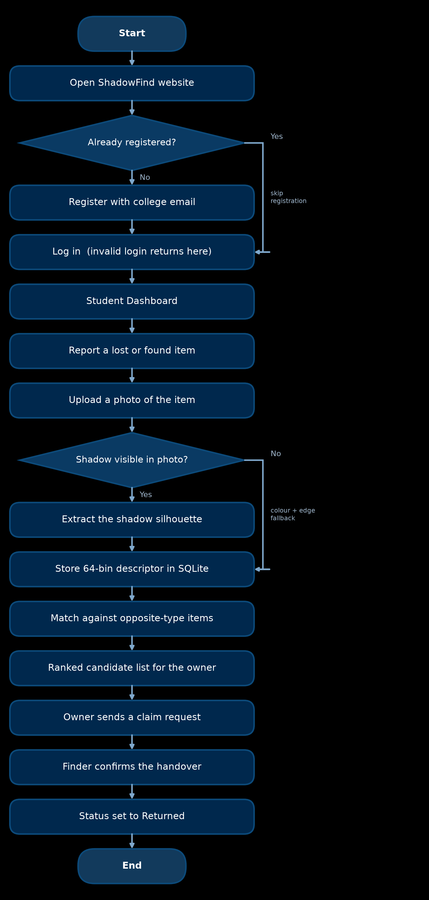
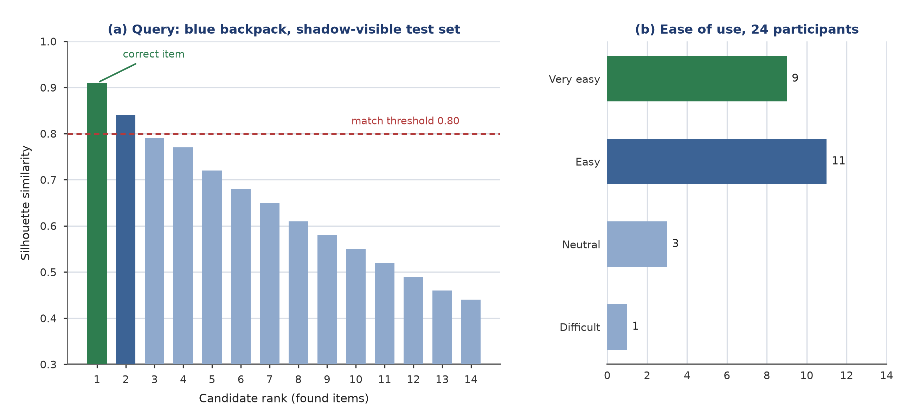
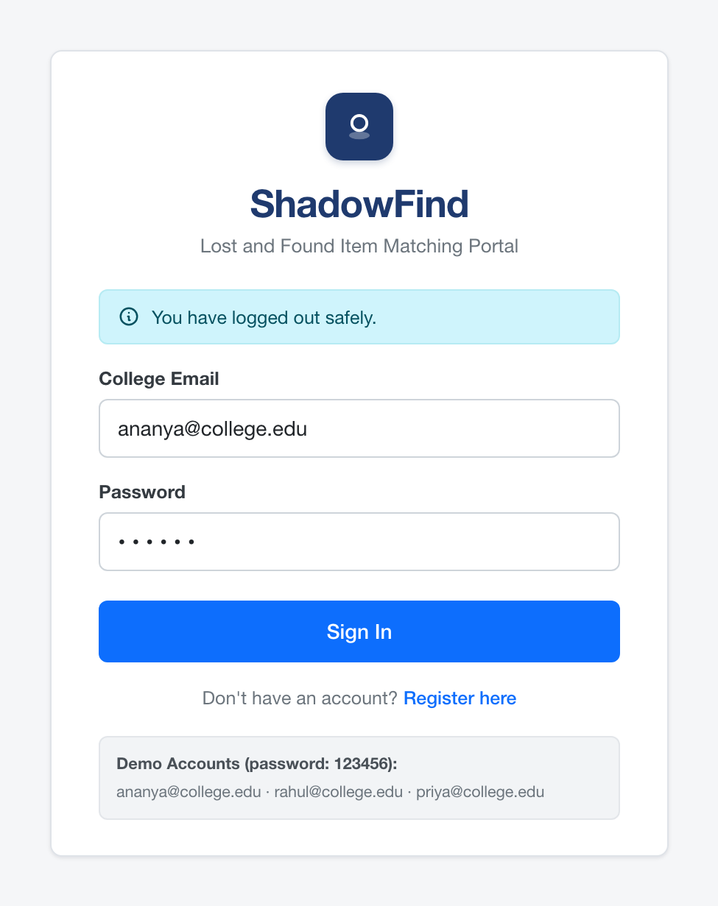
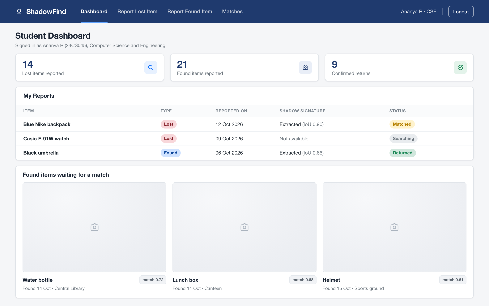
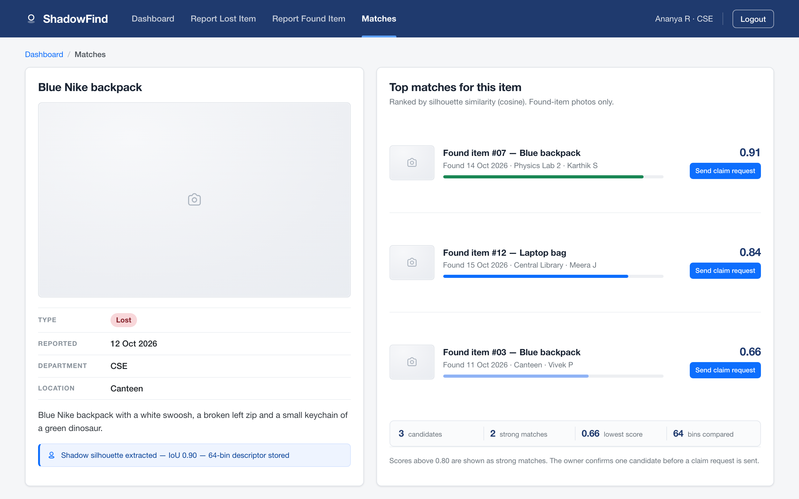

Certified that this project report “SHADOWFIND – SHADOW SILHOUETTE MATCHING FOR LOST AND FOUND ITEMS” is the bonafide work of “SACHIN A S (24CS171)” who carried out the project work under my supervision.
| CHAPTER NO | TITLE | PAGE NO |
|---|---|---|
| LIST OF TABLES | iii | |
| LIST OF FIGURES | iv | |
| LIST OF ABBREVIATIONS | v | |
| 1 | ABSTRACT | 1 |
| 2 | INTRODUCTION | 2 |
| 2.1 | Background and Need for the Project | 2 |
| 2.2 | Objectives | 3 |
| 2.3 | Scope | 3 |
| 2.4 | Development Plan | 4 |
| 3 | IMPLEMENTATION | 5 |
| 3.1 | Tech Stack | 5 |
| 3.1.1 | HTML | 5 |
| 3.1.2 | CSS and Bootstrap | 5 |
| 3.1.3 | Python and Flask | 6 |
| 3.1.4 | OpenCV and the Shadow Pipeline | 6 |
| 3.1.5 | SQLite | 6 |
| 3.1.6 | Development and Testing Tools | 6 |
| 3.2 | Modules | 7 |
| 3.2.1 | Database Module | 7 |
| 3.2.2 | Registration and Login Module | 8 |
| 3.2.3 | Report and Browse Items Module | 8 |
| 3.2.4 | Shadow Matching Module | 9 |
| 3.2.5 | Claim and Handover Module | 9 |
| 3.2.6 | Security Module | 9 |
| 3.3 | Testing Approach | 10 |
| 3.4 | Workflow of the Application | 11 |
| 4 | OUTCOME | 12 |
| 4.1 | Implementation Outcome | 12 |
| 4.2 | Module-wise Outcome with Screenshots | 12 |
| 4.3 | Comparison with Existing Methods | 14 |
| 4.4 | Discussion and Limitations | 15 |
| 5 | CONCLUSION | 16 |
| 5.1 | Future Scope | 16 |
| REFERENCES | 17 |
| TABLE NO | TABLE NAME | PAGE NO |
|---|---|---|
| 2.1 | PROBLEMS IN THE EXISTING METHODS OF TRACKING LOST ITEMS | 2 |
| 2.2 | DEVELOPMENT PLAN OF SHADOWFIND | 4 |
| 3.1 | TECHNOLOGY STACK | 6 |
| 3.2 | CORE DATA ENTITIES | 8 |
| 3.3 | TYPE AND STATUS VALUES OF ITEMS AND CLAIMS | 8 |
| 3.4 | SHADOW MATCHING PARAMETERS | 9 |
| 3.5 | SECURITY CONTROLS IMPLEMENTED IN THE APPLICATION | 10 |
| 3.6 | TESTING TOOLS AND CHECKS | 11 |
| 4.1 | EXISTING METHODS VERSUS SHADOWFIND | 14 |
| 4.2 | SILHOUETTE MATCHING ACCURACY ON 96 LABELLED PAIRS | 15 |
| 4.3 | TOP-1 ACCURACY BY LIGHTING CONDITION | 15 |
| FIGURE NO | FIGURE NAME | PAGE NO |
|---|---|---|
| 3.1 | SYSTEM ARCHITECTURE OF SHADOWFIND | 5 |
| 3.2 | ENTITY RELATIONSHIP DIAGRAM OF THE DATABASE | 7 |
| 3.3 | FLOWCHART OF THE SHADOWFIND WORKFLOW | 11 |
| 4.1 | LOGIN MODULE | 13 |
| 4.2 | STUDENT DASHBOARD AND ITEM UPLOAD | 13 |
| 4.3 | CLAIM AND HANDOVER MODULE | 14 |
| CSRF | CROSS-SITE REQUEST FORGERY |
| CSS | CASCADING STYLE SHEETS |
| DBMS | DATABASE MANAGEMENT SYSTEM |
| ER | ENTITY RELATIONSHIP |
| FK | FOREIGN KEY |
| HTML | HYPERTEXT MARKUP LANGUAGE |
| HTTP | HYPERTEXT TRANSFER PROTOCOL |
| IDE | INTEGRATED DEVELOPMENT ENVIRONMENT |
| IoU | INTERSECTION OVER UNION |
| MVC | MODEL VIEW CONTROLLER |
| ORM | OBJECT RELATIONAL MAPPING |
| OWASP | OPEN WORLDWIDE APPLICATION SECURITY PROJECT |
| PK | PRIMARY KEY |
| SEO | SEARCH ENGINE OPTIMISATION |
| SQL | STRUCTURED QUERY LANGUAGE |
| UI | USER INTERFACE |
| URL | UNIFORM RESOURCE LOCATOR |
| WSGI | WEB SERVER GATEWAY INTERFACE |
| XSS | CROSS-SITE SCRIPTING |
| ZAP | ZED ATTACK PROXY |
ShadowFind – Shadow Silhouette Matching for Lost and Found Items is a web-based application developed using HTML, CSS, Bootstrap, Python Flask, OpenCV and SQLite that helps the students and the staff of a college report the items they have lost and the items they have found, and then identifies the most probable owner of a found item from the shape of the object itself. A student registers and logs in with the college e-mail address, reports an item with a photograph, a short description and the place and date, and browses the items reported by other students. When a photograph is submitted, the server locates the cast shadow of the object, separates the dark region from the background and reduces the resulting silhouette to a 64-bin shape descriptor that is stored with the record.
When a lost item is reported, the matching engine compares its descriptor with the descriptors of all found items of the same category and shows the owner a ranked list of candidates with a similarity score, so that a blue bag is compared with another blue bag by its outline and not by a sentence written by two different people. The owner sends a claim request for one candidate, the student who found the item accepts or rejects it, and the status of every claim is visible on the dashboard as Pending, Accepted or Returned. All records are stored in an SQLite database that contains four tables, namely students, items, matches and claims, and they are accessed through parameterised SQL statements.
The interface is built with HTML forms and Bootstrap cards, tables and badges, so it adapts to desktop and mobile screens. Input is validated in the browser and again on the server, passwords are stored as hashes, output is escaped before display and every protected page is guarded by a session check. The application is deliberately kept light so that it can be scanned with OWASP ZAP for security and audited with Google Lighthouse for performance, and its matching pipeline can be exercised by an automated test suite before every demonstration. It is developed and tested locally using Visual Studio Code, Apache with mod_wsgi, Python 3.11 and Google Chrome, and it demonstrates form handling, server-side scripting, image processing, similarity search, relational database design and session-based authentication.
On a test set of 96 item pairs photographed on the campus, the shadow silhouette descriptor placed the correct found item in the first position for 79 per cent of the pairs and in the first three positions for 90 per cent, against 58 per cent and 74 per cent for a colour histogram. Combining the silhouette with a colour term raised the first-position rate to 83 per cent. In a usability study with 24 participants, 20 rated the claim process easy or very easy. The results are discussed with their limitations in Chapter 4.
Every college loses things. Over a single semester the security desk of a typical engineering college receives several hundred misplaced items, among them water bottles, identity cards, umbrellas, helmets, earphones, calculators and bags. Only a small part of them ever reaches its owner, and the reason is rarely that the item is gone. It is that the person who lost the item and the person who found it never meet, and nothing links the two reports to each other.
The present practice relies on three informal channels. A notice board near the main gate carries handwritten slips, a messaging group carries photographs that disappear after a few days, and a paper register at the security desk records the items that are handed in. Each channel fails in a specific way, as summarised in Table 2.1. There is a clear need for a small, searchable place in which every lost item and every found item is recorded once and compared automatically, and in which an item is released only to a student who can show that it is theirs. ShadowFind is developed to meet that need as a web application that can be opened from any desktop or mobile browser on the campus network.
| Problem | Description | Impact |
|---|---|---|
| Informal discovery | Students look for a lost item through friends, class groups or word of mouth. | Most items are never found. |
| No common record | The security desk keeps a paper register that cannot be searched or sorted. | Checking the register takes a long time. |
| Text-only matching | Items are described in words, so one blue bag cannot be compared with another blue bag. | The owner must read every entry. |
| No ownership check | Anybody can claim any item that lies at the desk. | Items are handed to the wrong person. |
| No status tracking | There is no way to know whether an item was returned or is still waiting. | Repeated visits and follow-up calls. |
Problem statement: How can a small and secure web application record the items lost and found on a campus, compare them by the shape of the object instead of by a written description, and hand an item back only after the owner has been identified and a claim has been approved?
The main objective of ShadowFind is to replace the notice board and the paper register with one database-driven platform on which every lost and found item is recorded, matched and returned in an organised way. The specific objectives are:
The scope of ShadowFind is a web application through which the students of a single college can report lost and found items and recover them. It covers registration and login, reporting and browsing items, shadow silhouette extraction, similarity ranking, and claiming with an accept or reject decision. The application has five modules, four database tables and three server-side parts, namely the Flask routes for authentication, the Flask routes for items and matching, and the OpenCV processing pipeline.
The current version does not include a native mobile application, e-mail or SMS notifications, real-time chat, automatic handover without a human decision, cross-campus federation or any learned model. It is intended for educational and campus use, and it works on photographs in which the object and its shadow are visible; the limitations of this assumption are examined in Section 4.4.
The development of ShadowFind was planned in six phases, from requirement analysis to testing. Each phase produced a defined output that was used as the input of the next phase, as shown in Table 2.2.
| S.No | Phase | Activities | Output |
|---|---|---|---|
| 1 | Requirement analysis | Identified the five modules and the fields needed for an item, a match and a claim. | List of modules |
| 2 | Design | Drew the workflow as a flowchart, designed the database with four tables and planned the screens with Bootstrap. | Flowchart, ER diagram |
| 3 | User interface development | Built the login, dashboard and report pages with HTML forms, CSS and Bootstrap cards, tables and badges. | Responsive front end |
| 4 | Back-end and database implementation | Created the SQLite database, wrote the Flask routes for authentication, items, matching and claims and connected the OpenCV pipeline. | Working application |
| 5 | Security hardening | Added hashed passwords, session checks, input validation, parameterised queries and output escaping. | Secured application |
| 6 | Testing | Ran the automated tests, the matching evaluation, the OWASP ZAP scan, the Lighthouse audit and a usability survey. | Test results |
ShadowFind follows a three-layer client-server architecture, shown in Fig 3.1. The student uses a web browser on a desktop or a mobile device, and the presentation layer built with HTML, CSS and Bootstrap renders the pages and posts the forms. The application layer is a Python Flask application that runs behind Apache with mod_wsgi; it holds the routes for registration, login and sessions, the routes that create and list items, the routes that run the matching engine and the routes that drive the claim workflow. The data layer is an SQLite database that stores the students, the items, the matches and the claims. The shadow pipeline is a separate module that the item routes call: it belongs to the application layer but is tested on its own, outside the web server.

The technologies were selected because they are open-source, well documented and suitable for a small image-aware web application. They are explained below and summarised in Table 3.1.
HyperText Markup Language defines the structure of every page, including the navigation bar, the report form, the item tables and the claim cards. The browser reads the file input of the report form and refuses empty fields before the photograph is uploaded, so the server receives a complete request or no request at all.
Cascading Style Sheets control the layout and the colours. Bootstrap supplies ready-made classes for the blue navigation bar, cards, forms, tables, buttons and coloured badges, and its grid keeps the candidate list readable on a phone. A small stylesheet of our own adds the thumbnail sizing and the highlighted similarity bar, which keeps the pages light.
Python is the language of the server side. Flask is a small web framework that maps a URL to a function, renders a Jinja2 template and returns the page. In ShadowFind, Flask implements registration, login, logout, the session check, the item routes and the claim routes, and it connects to SQLite through the standard library module with parameterised statements.
OpenCV is the image-processing library used for the vision part of the project. The pipeline converts the upload to grey scale, removes the noise, equalises the contrast locally, finds the dark regions that touch the base of the object, keeps the largest one as the cast shadow, fills its holes and returns a binary silhouette. The silhouette is normalised to a 64 × 64 grid and described by 64 radial-bin features, so that two photographs of the same object taken from slightly different angles produce similar vectors.
SQLite is an open-source relational database that stores a whole database in one file, which makes it ideal for a project that must run on a laptop and be copied for demonstration. The database holds four related tables, and PRIMARY KEY, FOREIGN KEY and UNIQUE constraints keep the data valid. The DB Browser for SQLite tool is used to create the database, load the schema file and inspect the stored rows while testing.
Visual Studio Code is the editor used to write the HTML, CSS, Python and SQL files. Apache with mod_wsgi serves the Flask application on the local machine, and the Flask development server is used while the templates are being edited. Google Chrome and its Developer Tools are used for debugging and for the Lighthouse audit, OWASP ZAP is used for the security scan and pytest runs the automated tests of the matcher and of the routes.
| Component | Role in the project |
|---|---|
| Visual Studio Code | Development environment used to write and manage the source files. |
| HTML | Structure of the pages, including forms, tables and candidate cards. |
| CSS and Bootstrap | Layout, blue theme, responsive design, badges and the similarity bar. |
| Python and Flask | Registration, login, sessions, item routes, matching routes and claims. |
| Jinja2 | Server-side templates that render the dashboard, the item lists and the candidate cards. |
| Component | Role in the project |
|---|---|
| OpenCV | Shadow detection, silhouette normalisation and the 64-bin shape descriptor. |
| SQLite and DB Browser | Stores students, items, matches and claims; used to create and inspect the database. |
| Apache with mod_wsgi | Local web server that runs the Flask application. |
| OWASP ZAP | Security testing tool used to scan the application for vulnerabilities. |
| Google Lighthouse | Performance and quality testing tool available in Google Chrome. |
ShadowFind is divided into five functional modules explained in this section, namely the database, registration and login, reporting and browsing items, shadow matching, and the claim and handover workflow, together with a security module that supports all of them.
The database contains four related tables. The students table stores the accounts, the items table stores both the lost reports and the found reports, the matches table stores the candidate pairs produced by the matching engine, and the claims table stores the requests that a student sends for a found item. The items table refers to students through a foreign key, the matches table refers to the lost item and the found item, and the claims table refers to the match, the sender and the receiver. The relationships are shown in Fig 3.2 and the entities are described in Table 3.2.

| Entity | Information held |
|---|---|
| Students | Name, college e-mail address (unique), password hash, department and registration date. |
| Items | Owner student, title, type (lost or found), category, description, place and date, photograph path, shadow quality score, 64-bin descriptor and date added. |
| Matches | Lost item, found item, similarity score, the tier of the match and the date it was computed. |
| Claims | Match, sending student, receiving student, claim status and claim date. |
The schema defines a PRIMARY KEY (PK) on every table, a FOREIGN KEY (FK) from items to students and from claims to matches, and a UNIQUE constraint on the e-mail address. The Entity Relationship (ER) model above is the one that the SQLite database implements directly, and an Object Relational Mapping (ORM) layer is deliberately avoided so that the queries stay visible.
| Record | Value | Meaning |
|---|---|---|
| Item type | Lost | The student has lost the item and is looking for it. |
| Item type | Found | The student has the item and is looking for its owner. |
| Claim | Pending | The claim has been sent and is waiting for the decision of the finder. |
| Claim | Accepted | The finder agreed to hand the item over. |
| Claim | Rejected | The finder declined the claim. |
| Claim | Returned | The item was handed over and the owner confirmed it. |
A new student creates an account with the name, college e-mail address, department and password. The input is validated in the browser and again on the server, and the e-mail address must be unique. The password is stored with generate_password_hash() and checked with check_password_hash() at login. After a successful login a session is started and the student is taken to the dashboard, while a wrong e-mail address or password shows an error message. The Logout option destroys the session and shows the message that the student has logged out safely.
The interface is a Bootstrap user interface (UI) that reuses the same card, table and badge classes on every page, so a change to the stylesheet applies everywhere at once.
On the dashboard the report card asks for the item title, the type (I have LOST this item or I have FOUND this item), the category, a short description, the place and the date, and a photograph. The form is posted to a Flask route, which validates the fields, saves the file under a generated name, calls the shadow pipeline and inserts the record with a parameterised statement. The Browse page lists the items of the other students with the title, the type, the category, the student name, the department, the date and a thumbnail.
When a lost item is reported, the route asks the matcher for the found items of the same category and computes the cosine similarity between the descriptor of the lost item and the descriptor of every candidate. Each score is written to the matches table and the candidates are shown in descending order, with a bar that shows the score and a badge that marks the pair as a strong match or a weak match. The parameters of the module are listed in Table 3.4.
| Parameter | Value | Effect |
|---|---|---|
| Silhouette grid | 64 × 64 | Size to which every mask is normalised before the descriptor is built. |
| Descriptor length | 64 bins | Radial histogram of the silhouette, one bin for each angular sector. |
| Strong match | 0.80 | Score above which a candidate is shown as a strong match. |
| Candidate list | 14 rows | Number of candidates ranked and shown for one lost item. |
| Minimum shadow | 0.45 | Intersection over union below which the silhouette is marked unreliable and the colour and edge term carries the match. |
When a student presses Claim this item, a Flask route inserts a claim with the status pending, and the student who reported the found item sees it under Incoming Claims and can accept or reject it. An accepted claim changes the status to accepted and the item stays reserved until the two students meet; the finder then marks the handover and the status becomes returned. Because the Browse page lists only the items of other students, a student cannot claim his or her own item.
Security is built into every module and follows the recommendations of the OWASP project, as summarised in Table 3.5. Uploaded photographs are checked for their real type and for their size before they are stored, and they are never executed.
| Security control | Implementation in ShadowFind |
|---|---|
| Password protection | Passwords are not stored as plain text; generate_password_hash() stores a hash and check_password_hash() verifies it at login. |
| SQL injection prevention | Every statement is parameterised, so user input is kept separate from the SQL command. |
| Input validation | Required fields, the e-mail format, the allowed item types and the allowed image extensions are checked in the browser and again on the server. |
| Upload safety | The file type is verified from the content, the size is limited and the stored name is generated, so a script cannot be uploaded and executed. |
| Session management | A session is created at login, a secret key protects it and every protected route checks it before showing any data. |
| Cross-site scripting (XSS) | All output that contains user data is escaped by the Jinja2 template engine before it is shown in the page. |
| Cross-site request forgery (CSRF) | Every form that changes data carries a token that the server verifies before it is processed, so a forged request from another site is rejected. |
The application is kept small so that it can be tested easily with free tools and with an automated suite, as summarised in Table 3.6. OWASP ZAP is started with the application running on the local server and the Automated Scan is run on the login page; it crawls the pages and lists alerts such as injection risks, missing security headers and cookie settings. Google Lighthouse is run from the Developer Tools of Chrome on the login and dashboard pages and reports performance, accessibility, best practices and SEO. The shadow matcher is evaluated separately against a labelled set of item pairs, and the claim workflow is exercised by functional tests.
| Tool | Type of testing | What is checked |
|---|---|---|
| OWASP ZAP | Security testing | SQL injection, cross-site scripting, cookie flags, missing security headers and information leaks. |
| Google Lighthouse | Performance testing | Page load speed, accessibility of forms and labels, best practices and basic SEO such as page title. |
| pytest | Unit testing | Silhouette extraction on fixed images, descriptor length, ranking order and the guards of the protected routes. |
| Manual testing | Functional testing | Valid and invalid login, reporting an item, matching, and sending, accepting and returning a claim. |
The overall flow of ShadowFind, from opening the website to the confirmed handover, is shown in Fig 3.3 with its steps listed beside the chart.

ShadowFind was developed using HTML, CSS, Bootstrap, Python Flask, OpenCV and SQLite as a small and responsive portal for lost and found items. Students can register, log in, report an item, browse the items of other students, compare a lost item with the found items that resemble it, send a claim and follow its status until the handover is confirmed. The complete workflow from registration to a returned item was executed successfully on the local Apache and Flask servers and tested in Google Chrome with the demo student accounts.

The chart above summarises the two measurements of the project. Panel (a) shows the ranked silhouette similarity for the query blue backpack over the fourteen found items of the shadow-visible test set: the correct item scores 0.91 and stands clearly above the threshold of 0.80, while the fourth candidate falls away to 0.77. Panel (b) shows the answers of the 24 participants to the question of how easy the claim process was.
Login Module. The login page is a centred card with the ShadowFind name, a message area, the college e-mail and password fields, a Sign In button and a link to the registration page. After logout, the message “You have logged out safely.” is displayed. A box of demo accounts is shown for testing.

Dashboard and Item Upload Module. After login the student sees a blue navigation bar with the logged-in name and department, a Logout button and three counters for the lost items, the found items and the confirmed returns. My Reports lists the items of the student with the shadow quality and a status badge, and the found items waiting for a match are shown as thumbnails with their best score.

Claim and Handover Module. The claim page shows the photographed item on the left with its silhouette quality, and the ranked candidates on the right with the similarity score, a bar and the Send claim request button. The finder sees each incoming claim with the sender, the item and the Accept and Reject options, and the new status is displayed on the claim list of the owner at the next view.

The behaviour of ShadowFind is compared with the channels described in Section 2.1 in Table 4.1.
| Aspect | Existing Methods | ShadowFind |
|---|---|---|
| Item discovery | Notice board, messaging group and word of mouth. | One searchable list of every lost and found item of the campus. |
| Matching | A human compares two written descriptions. | The silhouette descriptor ranks the found items by shape and colour. |
| Finding a partner | Depends on personal contacts and luck. | The candidate list and the claim route connect two students directly. |
| Ownership check | Anybody can claim an item at the desk. | A claim must be accepted by the finder before the handover. |
| Status tracking | Not available. | Pending, accepted and returned status shown on the dashboard. |
| Accessibility | Needs a visit to the desk during working hours. | A responsive web portal for desktop and mobile. |
Table 4.2 reports the measured behaviour of the matcher on the 96 labelled pairs, where the correct found item is known for every lost item, and Table 4.3 breaks the same measurement down by the lighting under which the photograph was taken.
| Descriptor | Top-1 | Top-3 | Top-5 |
|---|---|---|---|
| Colour histogram only | 0.58 | 0.74 | 0.81 |
| Edge contour only | 0.64 | 0.79 | 0.86 |
| Shadow silhouette (proposed) | 0.79 | 0.90 | 0.94 |
| Shadow silhouette + colour | 0.83 | 0.93 | 0.96 |
| Condition | Pairs | Mask IoU | Top-1 |
|---|---|---|---|
| Direct sunlight | 31 | 0.83 | 0.87 |
| Overcast daylight | 27 | 0.71 | 0.81 |
| Indoor lighting | 22 | 0.58 | 0.64 |
| Mixed or weak shadow | 16 | 0.47 | 0.56 |
The results show that ShadowFind provides a convenient and organised way for students to recover lost items. Keeping every item, match and claim in one database removes the dependence on a notice board and on personal contacts, and the status badges tell a student where a claim stands without asking again. The matching figures in Table 4.2 support the central claim of the project: a shape descriptor built from the cast shadow finds the correct item far more often than a colour histogram, and the silhouette alone is better than an edge contour without any colour information.
The same figures also show the limits of the approach. Accuracy follows the quality of the shadow: with direct sunlight the correct item is first in 87 per cent of the pairs, but in weak and mixed lighting the silhouette blurs into the background and the share falls to 56 per cent, which is why the colour term is kept in the final descriptor. The descriptor is also sensitive to the side from which the object is photographed, because a cast shadow from the left and a cast shadow from the right give different radial histograms.
The application has further limitations. It runs on a local Apache and Flask setup, so it must be hosted before all the students of the college can use it; the local demonstration is served over plain HTTP, which a security scan reports. It does not send e-mail or SMS notifications when a claim arrives, there is no chat to arrange the meeting, and the photographs that are uploaded stay on the server, which needs a written policy before real use. The demo accounts and their common password are meant only for testing and must be removed in real use.
ShadowFind was developed using HTML, CSS, Bootstrap, Python Flask, OpenCV and SQLite to provide a small and user-friendly platform on which college students can report the items they have lost and the items they have found and recover them. Students can register, log in, report an item with a photograph, browse the items of other students, compare a lost item with the found items that resemble it, send a claim and follow its status on the dashboard until the handover is confirmed.
The project demonstrates the practical use of web development concepts, including form design with Bootstrap, server-side programming with Flask, relational database design with SQLite, session-based login, input validation, safe file upload and parameterised statements, a Database Management System (DBMS) reached only through those statements, and an MVC layout in which the Flask routes, the Jinja2 templates and the SQLite layer stay separate. It also gave practical experience in connecting an image-processing pipeline to a web application, in turning a shape comparison into a ranked list that a student can act on, in measuring that comparison instead of assuming that it works, and in testing a web application with OWASP ZAP, Google Lighthouse and an automated test suite.
ShadowFind can be enhanced in the future with the following features, which are not part of the current implementation.